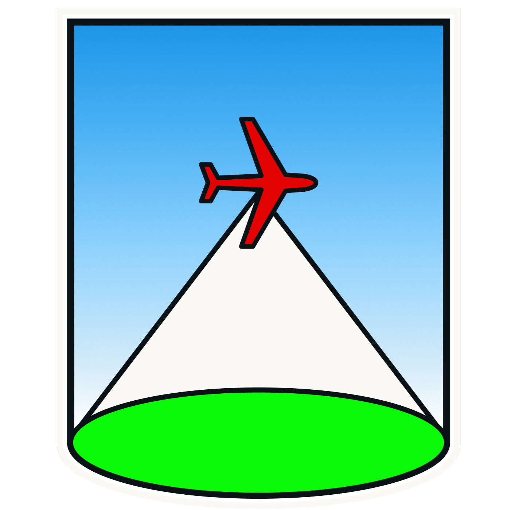

Integrasi LST, NO₂, NDVI, NDBI, dan Proksi Jalan - Multitemporal Q4 2023–Q1 2026
Indeks ini memakai Principal Component Analysis (PCA) gabungan pada empat dataset kuartalan. Satu set bobot, normalisasi, dan batas kelas diterapkan ke seluruh periode agar skor dapat dibandingkan antar-kuartal.
PC1 dipilih sebagai indeks: menjelaskan 31,1% variasi total. Sekitar 73% variasi skor PC1 berasal dari perbedaan antar-kuartal (musiman), terutama LST (87% variasinya antar-kuartal) dan NO₂ (96%).
| Variabel | Makna | Loading |
|---|---|---|
| NO₂ | Polusi udara | +0,62 |
| LST | Panas permukaan | +0,62 |
| NDVI | Vegetasi | +0,36 |
| NDBI | Kawasan terbangun | −0,28 |
| Proksi jalan | Kedekatan dengan jalan | −0,18 |
Skor lebih tinggi terutama menunjukkan permukaan lebih panas dan NO₂ lebih tinggi, yang sebagian besar berubah mengikuti musim (skor rata-rata tertinggi pada Q2, terendah pada Q1). NDVI, NDBI, dan proksi jalan berkontribusi lebih kecil dan hampir seluruh variasinya antar-lokasi dalam kuartal yang sama; NDVI berkontribusi positif, sedangkan NDBI dan proksi jalan negatif. Pada badan air, NDVI dan NDBI dikecualikan; skor hanya menggunakan LST, NO₂, dan proksi jalan.
Perhatian pada badan air: masking air mungkin tidak mencakup semua piksel. Jika piksel air terlewat dan tetap mendapat kelas tinggi, nilai tersebut dapat mencerminkan karakteristik permukaan air atau data yang tersisa bukan paparan tinggi. Periksa layer dan mask badan air sebelum menafsirkan area tersebut.
Hasil uji awal: Indeks diuji terhadap insiden ISPA tahunan 2025 tingkat kelurahan (n = 260) sambil mengontrol kepadatan penduduk sebagai variabel perancu. Korelasi Spearman mentah antara indeks dan insiden hampir nol (rata-rata 4 kuartal: −0,04). Setelah kepadatan dikontrol, asosiasinya lemah dan berarah negatif (korelasi parsial aproksimasi ≈ −0,32), dan tambahan R² dari indeks hanya ≈ 0,06 (R² model total ≈ 0,10). Indeks juga berkorelasi kuat negatif dengan kepadatan penduduk (ρ ≈ −0,63), sehingga sebagian skornya dapat mencerminkan kepadatan, bukan paparan lingkungan. Hasil ini adalah asosiasi tingkat kelurahan, bukan bukti sebab-akibat. Data kasus yang tersedia hanya tahunan 2025, sehingga slider kuartal belum divalidasi terhadap insiden kuartalan. Indeks sebaiknya dibaca sebagai gambaran kondisi lingkungan dan pola musiman, bukan sebagai penanda risiko kasus ISPA.
Rencana perbaikan: (1) standardisasi variabel per kuartal agar indeks menangkap variasi antar-lokasi, bukan musim; (2) uji bobot alternatif berbasis literatur; (3) validasi dengan data kasus per kuartal bila tersedia.
